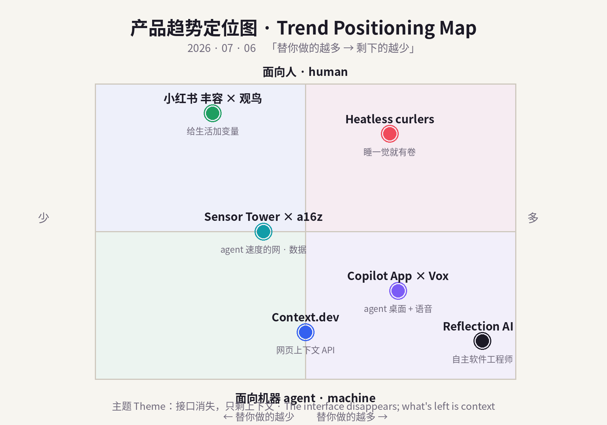
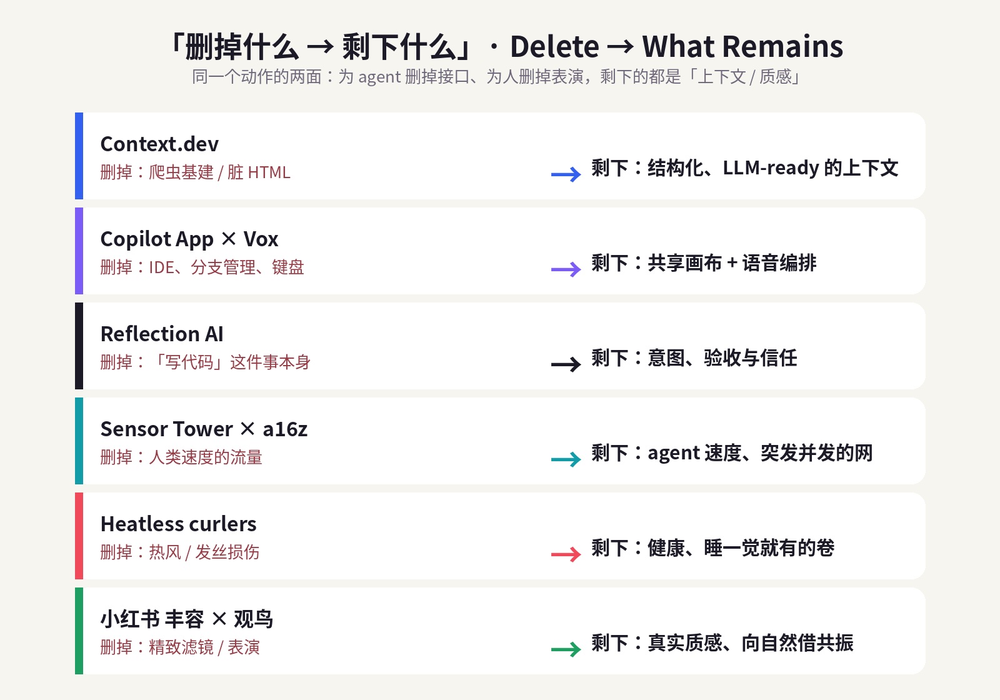
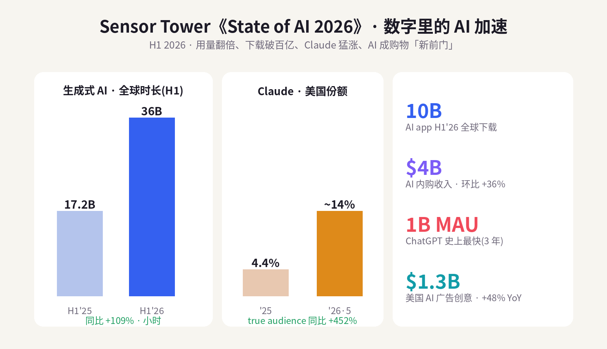

数据来源 / Sources: Product Hunt（July 2026 月榜/日榜、Context.dev、Vox）、Hacker News（Show HN 讨论摘要）、GitHub Blog / Help Net Security（Copilot App，2026-06-08）、Reflection AI 融资报道（PitchBook / Sacra / TechFundingNews / TradingKey / pulse2）、Sensor Tower《State of AI 2026》（2026-06-16，PRNewswire / The Neuron）、a16z《Big Ideas 2026》、Market Research Future / Accio（heatless curler 市场）、小红书趋势（东方财富·财富号 / Sohu / TopMarketing / 人人都是产品经理 / 知乎）。 方法 / Method: WebSearch（US-only）公开检索摘要。web_fetch 对外站被 egress 拦截（allowlist 仅含 npm/pypi/github/anthropic 等），Product Hunt / Hacker News / Sensor Tower / X / LinkedIn / 小红书均为登录墙或客户端渲染，无法直接抓取；统一以新闻、榜单、市场报告摘要替代，无法获取的原始页面已跳过、未做绕过。为保证每日新意，已排除 6/29–7/05 已深度分析过的产品（BrowserAct、Skybridge、AgentX、Sibyl、mixfox、HackerNows、Cursor for iOS、Z-Jail、Weave Isaac 1、Adam CAD、Tabstack、Humalike、Mark by Airtop、Wispr Flow、Glaze、Framer 3.0；消费：胶原/穿戴甲/blokecore/fibermaxxing/Owala/果醋/黑芝麻/奶油黄/Summerween/sleepmaxxing/candle warmer/黄猫爪 等）。 免责声明 / Disclaimer: 本报告为趋势研究，非投资建议。融资 / 估值 / 市场规模 / 份额为第三方公开披露或估算，随时可能变化；量化「浏览量 / 下载量 / 时长 / 份额」为平台或第三方口径，仅供参考。
一句话 / In one line： 昨天的信号是「删掉操作本身」，今天它收敛得更硬——当接口一层层被删掉，产品竞争的终点只剩一样东西：上下文（context）。 对 agent，是把乱糟糟的网页、脏 HTML、键盘和 IDE 全删掉，只留「结构化、可喂给模型的上下文」——Product Hunt 月榜第一 Context.dev（一个 API 把整张网变成 LLM-ready 上下文）、GitHub Copilot App（把 IDE 溶成人机共享画布）、以及一年内估值冲到 $250 亿的 Reflection AI（干脆把「写代码」这件事删掉，只留意图和验收）都在做同一件事。对人，是把「精致表演」删掉，只留真实的质感 / 环境 / 自然——欧美的 heatless curler（删掉热，睡一觉就有卷）、中国小红书的 「丰容」与「观鸟」（删掉滤镜，给生活加变量、向自然借共振）。
In one line: Yesterday's signal was "delete the act of operating." Today it sharpens: as interface layers get stripped away, the endgame of product competition is one thing — context. For agents, it means deleting the messy web, dirty HTML, the keyboard and the IDE, and keeping only structured, model-ready context: Product Hunt's #1 of July, Context.dev (one API that turns the whole web into LLM-ready context); the GitHub Copilot App (the IDE dissolved into a shared human-agent canvas); and Reflection AI, whose valuation rocketed to $25B in a year by deleting "writing code" altogether and keeping only intent and acceptance. For humans, it means deleting the polished performance and keeping real texture / environment / nature: the West's heatless curlers (delete the heat, wake up with curls) and China's Xiaohongshu waves of "enrichment (丰容)" and "birding (观鸟)" (delete the filter, add variables to life, borrow resonance from nature).
两条线是同一句话：接口消失，只剩上下文。 过去十年，产品先比「能不能做到」，再比「做得好不好」；到 2026 年，能力已经廉价泛滥，连「操作」都被删干净了，胜负手落到「删掉接口之后，你还能不能给出对的上下文」——对机器是数据的上下文，对人是生活的质感。谁把接口删得最狠、又能把「剩下的那一样」做得可信，谁赢。
The two lines are one sentence: the interface disappears; what's left is context. For a decade products competed on "can it be done," then "is it done well." By 2026 capability is cheap, and even operating has been deleted — so the contest becomes "once you remove the interface, can you still supply the right context?" — the context of data for machines, the texture of life for humans. Whoever strips the interface most aggressively and makes "the one thing that remains" credible, wins.


五条最强信号 / Five strongest signals
Five signals (EN): (1) Context.dev — YC-backed #1 on Product Hunt's July board; one API to scrape/crawl/extract/enrich the web; 5,000+ businesses. (2) GitHub Copilot App × Vox — agent-native desktop with per-session git worktrees, shared canvases, Agent Merge, 1M-token context; Vox adds voice-in/voice-out. (3) Reflection AI — DeepMind/AlphaGo founders; $545M→$25B in a year, seeking $2.5B, $150M/mo SpaceX compute deal; autonomous SWE. (4) Sensor Tower State of AI 2026 — GenAI time 17.2B→36B hrs, 10B downloads & $4B IAP (+36%) in H1; ChatGPT 1B MAU in 3 yrs; Claude +452% YoY, US share 4.4%→14%. (5) Heatless curlers (+15% in 2026) and Xiaohongshu "丰容" (1B+ views) × "观鸟" (120M+, notes +70%); texture beats price.

今天最锋利的一枪来自一个「基建」品类：网页上下文（web context）。Context.dev 用一句话概括自己——"One API to scrape, enrich, and understand the web." 它把过去每个团队都要自己搭、还老是坏掉的爬虫基建，收进一个接口：scrape 任意 URL 变干净的 Markdown / HTML、crawl 整站与 sitemap、把网页 extract 成你自定义 schema 的结构化数据、截图、抓取任意域名的 logo / 配色 / 字体 / styleguide / 公司信息，甚至做交易描述符富化（把银行流水里那串鬼画符翻译成商户）。它提供 TypeScript / Python / Ruby 的 typed SDK，YC 背景，无需信用卡，「几分钟接入」，而且coding agent 也能直接调用。结果是它冲上了 Product Hunt 7 月月榜第一，官网称 5,000+ 企业在用（Mintlify、Daily.dev、Ferndesk）。它精准踩中 a16z 的判断：当流量从「人类速度」转向「agent 速度」，agent 最缺的不是模型，而是能被信任地喂进模型的、干净的上下文——Context.dev 卖的就是这一口「上下文」。
The day's sharpest shot is infrastructure: web context. Context.dev sums itself up as "one API to scrape, enrich, and understand the web." It collapses the brittle scraping stack every team used to rebuild into a single interface: scrape any URL into clean Markdown/HTML, crawl sites and sitemaps, extract pages into your own schema, capture screenshots, pull logos / colors / fonts / styleguides / company data from any domain, and even resolve transaction descriptors. It ships typed SDKs (TS/Python/Ruby), is YC-backed, needs no card, installs in minutes, and coding agents can call it directly. That took it to #1 on Product Hunt's July board, with 5,000+ businesses (Mintlify, Daily.dev, Ferndesk). It nails a16z's thesis: as traffic shifts from human-speed to agent-speed, what agents lack isn't the model — it's clean, trustworthy context to feed it. Context.dev sells exactly that.
| 维度 Dimension | 分析 Analysis |
|---|---|
| 商业模式 Business model | 用量计费的 API / 开发者 SaaS（免费额度 + 按 scrape/extract 用量付费），典型 usage-based land-and-expand。Usage-based API + free tier. |
| 核心价值 Core value | 一个接口把「乱网」变成 LLM-ready 的结构化上下文（scrape/crawl/extract/enrich/截图/品牌数据）。The web → structured context in one call. |
| 成功因素 Success | 时机（agent 需要读网）+ 收敛脆弱基建 + 开发者体验（typed SDK、免卡、几分钟接入）+ agent 可直接调用。Timing + DX + agent-callable. |
| 细分市场 Niche | Agent / AI 应用的数据接入层（不是通用爬虫，也不是搜索）。Data-access layer for AI apps & agents. |
| 目标受众 Audience | 构建 AI 产品 / agent 的开发者与团队、做 enrichment / RAG / 自动化的公司。Devs building AI products & agents. |
| 品牌设计 Brand | 名字直给（"Context"=上下文），定位克制专业，主打「一个 API」的简洁叙事。Literal naming; "one API" simplicity. |
| 产品数据 Data | Product Hunt 7 月月榜第一；5,000+ 企业（Mintlify、Daily.dev、Ferndesk）；TS/Python/Ruby SDK；YC。 |
| 链接 Link | producthunt.com/products/context-dev |
| 评论摘要 Reviews | 正面：「省掉自建爬虫、markdown 干净、品牌数据（logo/配色）很实用」；关注点：反爬 / 速率限制稳定性、结构化抽取在复杂站点的准确率、成本随规模上升。Praise for DX & brand-data; watch anti-bot reliability & extraction accuracy at scale. |
如果 Context.dev 删掉的是「读网的接口」，那 GitHub Copilot App 删掉的是「IDE」这个接口本身。在 Microsoft Build 2026 上发布、6/8 向付费用户开放桌面预览的这款独立 App（Win/macOS/Linux），把开发从「你在编辑器里敲」变成「你在一块画布上指挥一群 agent」：My Work 视图跨仓库看所有进行中的 session / issue / PR / 后台自动化；每个 session 跑在自己的 git worktree（隔离分支副本，App 自动建、自动清，不用你 juggling 分支）；Canvases 是人和 agent 共享的工作面，可以显示计划、PR、浏览器会话、终端、部署、dashboard，agent 实时更新、你随时编辑 / 重排 / 批准 / 改道；Agent Merge 会跟着 PR 过 review 与 CI、盯着必需 reviewer、修失败检查，满足条件才合并；再叠加 100 万 token 上下文窗口与可调 reasoning。而 Product Hunt 上一个小而妙的指路人 Vox（"voice in, voice out — with GitHub Copilot"）把最后一层键盘也删了：/vox 打开一个会呼吸的听觉 orb，你说话、听 agent 回、可以语音打断纠正，纯 JS、一行安装。Copilot App 把「操作 IDE」删成「编排 agent」，Vox 把「打字」删成「对话」——接口一层层退场，剩下的是意图与画布。
If Context.dev deletes the interface to read the web, the GitHub Copilot App deletes the IDE itself. Unveiled at Build 2026 and opened to paid users on June 8, this standalone desktop app (Win/macOS/Linux) turns coding from "you type in an editor" into "you direct a swarm of agents on a canvas." My Work shows every in-flight session/issue/PR/automation across repos; each session runs in its own git worktree (isolated branch copy, auto-created and auto-cleaned); Canvases are shared human-agent surfaces showing a plan, PR, browser session, terminal, deployment or dashboard that agents update live and you can edit/reorder/approve/redirect; Agent Merge shepherds a PR through review and CI; plus a 1M-token context window. And a neat indie pointer, Vox ("voice in, voice out — with GitHub Copilot"), deletes the last keyboard layer:
/voxopens a breathing audio orb — you speak, hear the agent reply, barge in by voice; pure JS, one-line install. Copilot App deletes "operating an IDE" into "orchestrating agents"; Vox deletes "typing" into "talking" — interface layers exit, intent and canvas remain.
| 维度 Dimension | 分析 Analysis |
|---|---|
| 商业模式 Business model | Copilot 订阅升级（Pro/Pro+/Business/Enterprise）——用 agent 桌面提高 ARPU 与留存；Vox 免费开源、引流。Subscription upsell (Copilot); Vox free/OSS. |
| 核心价值 Core value | 把 IDE 变成人机共享的 agent 编排台（worktree 隔离、Canvas、Agent Merge、1M ctx）+ 语音接口。IDE → agent orchestration surface + voice. |
| 成功因素 Success | GitHub / 微软分发、与现有 Copilot 装机量咬合、并行 agent 的工程化（worktree/CI）解决真实痛点。Distribution + real parallel-agent plumbing. |
| 细分市场 Niche | Agentic 开发环境 / 多 agent 编排（区别于单窗口的补全式 IDE）。Agentic dev environment / multi-agent orchestration. |
| 目标受众 Audience | 专业开发者、平台 / DevEx 团队、跑并行 agent 的工程组织；Vox 面向想「离键盘」的开发者。Pro devs & platform teams. |
| 品牌设计 Brand | Copilot 沿用「副驾」隐喻但升级为「工作台」；Canvas / worktree / Merge 的语言把 agent「可管控化」。"Copilot" → workbench; controllable-agent language. |
| 产品数据 Data | Build 2026（6/2 发布）；桌面预览 6/8 开放付费用户；1M-token ctx（VS Code/CLI/App）；Vox 上 Product Hunt（7/3）。 |
| 链接 Link | github.blog · Copilot app · Vox |
| 评论摘要 Reviews | 正面：「worktree 隔离让并行 agent 不打架」「Canvas 让 agent 工作可见可控」「Agent Merge 省心」；质疑：技术预览的稳定性、agent 自动合并的信任边界、成本。Praise for isolation/visibility; concerns on preview stability & auto-merge trust. |
前两个删的是「接口」，Reflection AI 干脆想删掉「写代码」这件事本身。它的产品 Asimov 不是补全（明确区别于 Copilot），而是去理解整个代码库 + 文档 + 设计规格 + 团队沟通，自主完成规划 → 写 → 测 → 优化的全流程——目标是「AI 软件工程师」。班底极硬：2024 年 3 月成立于纽约，两位创始人都是 Google DeepMind 老兵——Misha Laskin（Gemini reward modeling 负责人）、Ioannis Antonoglou（AlphaGo / AlphaZero / MuZero 共同创造者）。资本给出的定价堪称 2026 最猛的曲线之一：A 轮（2025/03）$130M @ ~$5.45 亿；B 轮（2025/10）Nvidia 领投 $20 亿、估值跳到 $80 亿；2026 年寻求 $25 亿新融资 @ $250 亿 pre-money——一年 45 倍。它还在 6 月与 SpaceX 签下算力大单：2026/7/1 起至 2029，每月付 SpaceX $1.5 亿用 Nvidia GB300（孟菲斯 Colossus 2 数据中心）。这既是「删掉接口，只剩意图」这条线的最激进版本，也是它最诚实的裂缝——$250 亿几乎全押在「自主 SWE 真能跑通」这个尚未被大规模验证的假设上，且月烧 $1.5 亿算力，容错窗口极窄。
The first two delete the interface; Reflection AI wants to delete writing code itself. Its product Asimov isn't completion (explicitly unlike Copilot) — it ingests the entire codebase + docs + design specs + team comms and autonomously plans, writes, tests and optimizes: an AI software engineer. The pedigree is heavy: founded March 2024 in NY by two Google DeepMind veterans — Misha Laskin (Gemini reward-modeling lead) and Ioannis Antonoglou (co-creator of AlphaGo/AlphaZero/MuZero). The capital curve is one of 2026's steepest: Series A (Mar 2025) $130M @ ~$545M; Series B (Oct 2025) Nvidia-led $2B, valuation to $8B; and a 2026 raise of $2.5B @ $25B pre-money — ~45x in a year. In June it signed a compute deal with SpaceX: from July 1, 2026 through 2029, $150M/month for Nvidia GB300 at the Memphis Colossus 2 datacenter. It's the most radical version of "delete the interface, keep the intent," and its most honest crack: $25B rests almost entirely on the still-unproven bet that autonomous SWE actually ships — while burning $150M/mo, the margin for error is thin.
| 维度 Dimension | 分析 Analysis |
|---|---|
| 商业模式 Business model | 前沿模型 + 「自主软件工程师」产品（Asimov）；企业席位 / 用量变现，重资本、重算力。Frontier model + autonomous-SWE product; enterprise seats/usage. |
| 核心价值 Core value | 理解全库 + 文档 + 规格 + 沟通，自主完成规划→写→测→优化，而非补全。Whole-context autonomous SWE, not autocomplete. |
| 成功因素 Success | DeepMind/AlphaGo 班底 + Nvidia/SpaceX 资本与算力背书 + 开源前沿模型叙事。Team + Nvidia/SpaceX backing + open-frontier thesis. |
| 细分市场 Niche | 自主编码 agent / 前沿模型（与 Copilot 式补全、与通用聊天区隔）。Autonomous coding agents / frontier models. |
| 目标受众 Audience | 大型工程组织、平台团队、想要「AI 队友」而非「AI 补全」的公司。Large eng orgs wanting an AI teammate. |
| 品牌设计 Brand | "Reflection"（反思 / 自我改进）+ 产品名 "Asimov"（科幻·机器人）——强化「会思考的工程师」定位。Reflective, sci-fi-coded. |
| 产品数据 Data | 估值 $545M→$8B→$25B（一年）；寻求 $2.5B；SpaceX $150M/月算力（'26/7–'29）；纽约，2024 成立。 |
| 链接 Link | Sacra · Reflection AI · TechFundingNews |
| 评论摘要 Reviews | 看多：「班底 + 算力 + 开源前沿，是少数能挑战闭源的团队」；看空：「$25B 领先于收入验证，月烧 $1.5 亿，自主 SWE 尚未规模化，估值透支」。Bull: elite team+compute; Bear: valuation ahead of proof, heavy burn. |
上面三个产品为什么都在「删接口、留上下文」？因为底层的数字在逼它们。Sensor Tower《State of AI 2026》（6/16）给出一组硬数据：生成式 AI app 的全球时长从 H1'25 的 172 亿小时翻倍到 H1'26 的 360 亿小时；AI app H1 全球下载破 100 亿、内购收入破 $40 亿（环比 +36%）；ChatGPT 用 3 年成为史上最快突破 10 亿月活的移动 App（快过 TikTok / YouTube / Instagram）。但格局在裂开：ChatGPT 的 true audience 份额 2026 年 3 月首次跌破 50%，而 Claude 成为 2026 最快的挑战者——5 月 true audience 同比 +452%、美国份额从 4.4% 冲到近 14%。更关键的结构变化是：AI 正在成为购物的「新前门」（AI shopping + 广告双爆发，美国 AI 主题广告创意支出 1–5 月 $13 亿、+48% YoY）。把这些拼起来，正好是 a16z 的判断：流量从「人类速度」（可预测、低并发）转向 「agent 速度」（递归、突发、海量并发），下一代「agent-native」基建要把 thundering herd 当默认态，瓶颈从算力变成协调（routing / locking / 状态 / 策略）。换句话说，Context.dev / Copilot App / Reflection 不是孤立的产品，而是「agent 速度的网」在应用层长出来的三颗牙。
Why are all three products deleting interface, keeping context? Because the underlying numbers force it. Sensor Tower's State of AI 2026 (Jun 16): GenAI app time spent doubled from 17.2B hrs (H1'25) to 36B hrs (H1'26); 10B+ downloads and $4B+ IAP (+36% HoH) in H1; ChatGPT hit 1B MAU in 3 years — the fastest mobile app ever. But the field is splintering: ChatGPT's true-audience share fell below 50% for the first time in March 2026, while Claude is the fastest challenger — +452% YoY true audience in May, US share 4.4% → ~14%. The deeper shift: AI is becoming the new front door to shopping (AI shopping + ads booming; US AI-themed ad creative spend $1.3B in Jan–May, +48% YoY). Stitched together, this is a16z's thesis: traffic moves from human-speed (predictable, low-concurrency) to agent-speed (recursive, bursty, massively parallel); next-gen agent-native infra must treat thundering herds as default, and the bottleneck becomes coordination (routing/locking/state/policy). In short, Context.dev / Copilot App / Reflection aren't isolated launches — they're three teeth the "agent-speed web" is growing at the app layer.
| 维度 Dimension | 分析 Analysis |
|---|---|
| 商业模式 Business model | 平台侧多点变现：订阅（ChatGPT/Claude）、内购（$4B）、广告（AI 创意 +48%）、AI 电商抽佣。Subscriptions + IAP + ads + AI commerce. |
| 核心价值 Core value | AI 从「工具」变「入口 / 环境」：搜索、购物、开发都从 AI 前门进。AI as the front door / environment. |
| 成功因素 Success | 用量复利（时长翻倍）+ 竞争多极化（Claude 猛涨）+ 商业闭环（购物 + 广告）。Usage compounding + multipolar + commerce loop. |
| 细分市场 Niche | 「agent 速度」基建与 AI 前门流量（区别于 human-speed 的老 web）。Agent-speed infra & AI-front-door traffic. |
| 目标受众 Audience | 基建 / 平台团队、AI 应用开发者、电商与广告主、投资人。Infra/platform teams, AI devs, retailers, investors. |
| 品牌设计 Brand | 「State of AI」年度报告 = 行业坐标系；a16z「Big Ideas」= 议程设置。Annual-report & agenda-setting brands. |
| 产品数据 Data | 时长 17.2B→36B 小时；下载 10B；内购 $4B(+36%)；ChatGPT 1B MAU/3yr；Claude +452%、4.4%→14%；AI 广告 $1.3B(+48%)。 |
| 链接 Link | Sensor Tower · State of AI 2026 · a16z · Big Ideas 2026 |
| 评论摘要 Reviews | 共识：「AI 用量与商业化拐点已过，竞争进入多极」；分歧：「口径（true audience / 时长）与真实付费的关系」「AI 购物前门的转化仍待验证」。Consensus on inflection; debate on metrics & commerce conversion. |
消费端在做和 agent 侧一模一样的动作：删掉一层接口（热），只留结果（卷）。 Heatless curler（无热卷发器）——那种睡前把软棒 / 缎带绕进头发、第二天早上「揭晓」出蓬松卷的产品——正沿着一条稳的曲线上行：全球市场从 2024 年 $1.75 亿、2025 年 $1.85 亿，到 2035 年 $3.19 亿（CAGR 5.6%），2026 单年预计同比 +15%，主要由 Gen Z 的「无热造型」偏好驱动。它的叙事完美贴合 2026：头发健康 / wellness（删掉热损伤）、睡眠即造型（删掉早晨的动作，「睡一觉就有卷」）、以及 ~80% 消费者经社媒发现美妆新品（TikTok / IG / Pinterest 的「晨间揭晓」内容天然适合短视频）。品类里 Flexi Rods（软棒） 因多用途、易用而主导，Ribbon Curls（缎带卷） 快速上升；北美是最大市场、亚太增速最快。它当然也有「诚实的裂缝」：出卷效果不稳定（发质 / 手法 / 湿度差异大），这也是复购与口碑的真正门槛——和 agent 侧「删掉接口容易、最后一公里可信度难」如出一辙。
The consumer side runs the exact same move: delete one interface layer (heat), keep the result (curls). Heatless curlers — the soft rods/ribbons you wrap in before bed and "reveal" into bouncy curls next morning — are climbing a steady curve: the global market goes from $175M (2024) → $185M (2025) → $319M (2035) (5.6% CAGR), with ~+15% in 2026 alone, driven by Gen Z's non-heat preference. The narrative fits 2026 perfectly: hair health/wellness (delete heat damage), sleep-as-styling (delete the morning routine — wake up with curls), and ~80% discover beauty via social (the morning reveal is native to short video). Flexi Rods dominate (versatile, easy), Ribbon Curls rise fast; North America leads, APAC grows fastest. Its honest crack: results are inconsistent (hair type/technique/humidity), which is the real bar for repeat purchase and word-of-mouth — exactly like the agent side, where deleting the interface is easy, but last-mile credibility is hard.
| 维度 Dimension | 分析 Analysis |
|---|---|
| 商业模式 Business model | 低价高频美妆配件（DTC + Amazon + TikTok Shop），靠社媒内容 → 冲动购买 → 复购。Low-cost accessory, social-driven impulse + repeat. |
| 核心价值 Core value | 无热、护发、「睡一觉就有卷」——删掉热损伤与早晨造型动作。Damage-free, sleep-in curls. |
| 成功因素 Success | wellness / 护发叙事 + 「晨间揭晓」适配短视频 + 低价试错门槛 + Gen Z 偏好。Wellness + reveal-content + low price + Gen Z. |
| 细分市场 Niche | 无热造型（heat-free hairstyling）配件（区别于电卷棒 / 直发器）。Heat-free styling accessory. |
| 目标受众 Audience | Gen Z / 千禧一代女性、注重发质健康、爱短视频「教程 + 揭晓」。Gen Z/millennial women, hair-health minded. |
| 品牌设计 Brand | 缎带 / 丝绒质感、柔和莫兰迪色、「overnight / no-heat」卖点前置。Soft, satin, "overnight/no-heat" forward. |
| 产品数据 Data | 市场 $175M('24)→$185M('25)→$319M('35)，CAGR 5.6%；2026 +15%；~80% 经社媒发现；Flexi Rods 主导、Ribbon Curls 上升。 |
| 链接 Link | Heatless Hair Curler Market · MRFuture |
| 评论摘要 Reviews | 正面：「护发、真的睡一觉就有卷、便宜好带」；抱怨：「效果不稳、粗 / 直发出不了卷、需要练手法、隔夜不舒服」。Praise for damage-free & value; complaints on inconsistency & comfort. |
中国小红书上，同一个「删掉表演、只留真实」的动作，长成了两个词：丰容与观鸟。「丰容」 借用动物园「行为丰容」（给圈养动物增加环境变量以改善福利）的概念，被年轻人拿来形容主动改变环境、打破日常惯性，给自己的生活「加变量」：#家的丰容计划 浏览量破 10 亿，"人你该丰容了" 上线 90 天破亿，并衍生出旅行丰容 / 兴趣丰容 / 认知丰容，辐射家居、美食、穿搭、个护——2026 年它正从短时热点变成一种主流生活方式。「观鸟」 则是「鸟门」——年轻人追捧的新潮户外：#观鸟 近 90 天浏览量 1.2 亿+、笔记数 +70%+，卖点是「极高沉浸的自然入口」和「逃离都市」的获得感（同期上升的还有拼豆、轻运动）。两者背后是同一套决策逻辑：质感 > 性价比（"性价比"互动极低，"高级 / 氛围感"高互动；护肤讨论里「肤感 / 质地」压过「成分」），真实、有瑕疵、生活化的内容更被信任，平台把 50%+ 流量倾斜给千粉以下素人、扶持 3000+ 兴趣圈层。丰容和观鸟卖的从来不是某件商品，而是「给被算法磨平的生活，重新加回变量与质感」——这正是消费侧版本的「删掉接口，只剩上下文」。
On China's Xiaohongshu, the same "delete performance, keep the real" move grows into two words: enrichment (丰容) and birding (观鸟). "丰容" borrows the zoology term behavioral enrichment (adding environmental variety to improve captive-animal welfare) to describe young people actively changing their environment to break routine and add "variables" back into life: #家的丰容计划 has 1B+ views, "you should enrich yourself" passed 100M in 90 days, spawning travel/interest/cognition variants across home, food, fashion and personal care — in 2026 it's shifting from a fad to a mainstream lifestyle. "观鸟" (birding) is the trendy new outdoor "bird gate": #观鸟 has 120M+ views and +70% notes in 90 days, selling "a deeply immersive doorway to nature" and the "escape the city" payoff (rising alongside perler beads and light exercise). Both rest on one decision logic: texture beats price ("value-for-money" gets little engagement while "premium/ambiance" wins; in skincare, "skin-feel/texture" outweighs "ingredients"), authentic, imperfect, everyday content earns more trust, and the platform tilts 50%+ of traffic to sub-1k-follower creators across 3,000+ interest circles. 丰容 and 观鸟 never sell a product — they sell "adding variables and texture back into a life flattened by the algorithm" — the consumer-side version of "delete the interface, keep the context."
| 维度 Dimension | 分析 Analysis |
|---|---|
| 商业模式 Business model | 内容种草 → 兴趣圈层 → 家居 / 户外 / 个护商品与体验转化；平台靠精细化流量分发。Content-to-commerce across niche circles. |
| 核心价值 Core value | 给「被算法磨平」的生活重新加变量与质感（丰容）、向自然借沉浸与逃离（观鸟）。Add variables & texture; immersive nature. |
| 成功因素 Success | 概念挪用（行为丰容）有记忆点 + 真实内容红利 + 平台向素人 / 小众圈层倾斜流量。Sticky concept + authenticity + niche-traffic tilt. |
| 细分市场 Niche | 生活方式 / 情绪价值消费与新潮户外（区别于纯性价比种草）。Lifestyle/emotional-value & new outdoors. |
| 目标受众 Audience | 一二线年轻人、独居 / 都市白领、追求「高级感 / 氛围感」与真实感的用户。Young urban, solo-living, texture-seeking. |
| 品牌设计 Brand | 「丰容 / 鸟门」造词好传播；视觉走清新高级、信息卡片风；反滤镜、重真实。Coined terms; fresh, anti-filter aesthetic. |
| 产品数据 Data | #家的丰容计划 10 亿+ 浏览、"人你该丰容了" 90 天破亿；#观鸟 1.2 亿+、笔记 +70%+；「质感 > 性价比」；50%+ 流量给千粉以下素人。 |
| 链接 Link | 小红书 2026 兴趣趋势（Sohu） · Q1 热点解读 · TopMarketing |
| 评论摘要 Reviews | 正面：「丰容让我重新对生活有掌控感」「观鸟让我从工位里逃出来」；质疑：「丰容=消费主义换皮」「观鸟被网红化、装备内卷」。Praise for agency/escape; critique of consumerism & gear-creep. |
| 产品 Product | 类别 Category | 商业模式 Model | 核心价值 Core value | 目标受众 Audience | 关键数据 Key data | 删掉 → 剩下 Delete → Remains |
|---|---|---|---|---|---|---|
| Context.dev | Agent 基建 / API | 用量计费 API | 一个 API 把乱网变结构化上下文 | AI/agent 开发者 | PH 7 月月榜第一；5,000+ 企业 | 爬虫基建 → 结构化上下文 |
| GitHub Copilot App × Vox | Agentic IDE / 语音 | Copilot 订阅升级 + OSS 引流 | IDE 溶成 agent 编排台 + 语音 | 专业开发者 / 平台团队 | Build 2026；1M-token ctx；6/8 预览 | IDE / 键盘 → 共享画布 + 对话 |
| Reflection AI | 自主编码 / 前沿模型 | 模型 + 企业席位 | 自主软件工程师（全库理解） | 大型工程组织 | 估值 $545M→$25B；SpaceX $150M/月 | 「写代码」→ 意图与验收 |
| Sensor Tower × a16z | 趋势 / 数据 | 平台多点变现 | AI 成购物「新前门」/ agent 速度的网 | 基建 / 投资 / 电商 | 时长 17.2B→36B；Claude +452% | 人类速度 → agent 速度的网 |
| Heatless curlers | 美妆配件（欧美） | DTC / 社媒电商 | 无热护发、睡一觉就有卷 | Gen Z / 千禧女性 | 市场 +15%（2026）；$319M('35) | 热 / 伤害 → 健康的卷 |
| 小红书 丰容 × 观鸟 | 生活方式（中国） | 内容种草 → 圈层转化 | 给生活加变量、向自然借共振 | 都市年轻人 / 独居 | 丰容 10 亿+、观鸟 1.2 亿+（+70%） | 精致表演 → 真实质感 / 自然 |
EN comparison (condensed): Context.dev — usage-based API, web→context, #1 on PH July, 5,000+ businesses. Copilot App × Vox — subscription upsell, IDE→agent desktop + voice, Build 2026, 1M-token. Reflection AI — frontier model + autonomous SWE, $545M→$25B, $150M/mo SpaceX. Sensor Tower × a16z — the data: GenAI time 17.2B→36B hrs, Claude +452%, AI as shopping's front door. Heatless curlers — social-driven accessory, +15% in 2026, delete heat keep curl. Xiaohongshu 丰容 × 观鸟 — content-to-commerce, 1B+ / 120M+ views, texture over price.
1) 主线：接口消失，只剩上下文 / The interface disappears; context remains. 六个信号是同一句话的两面。对机器：Context.dev 删掉爬虫基建、Copilot App 删掉 IDE、Reflection 删掉「写代码」——剩下的都是可信的上下文与意图。对人：heatless 删掉热、丰容删掉惯性、观鸟删掉都市噪音——剩下的都是真实的质感与环境。2026 的产品竞争，不再是「加功能」，而是「减接口」，然后看谁能守住「剩下的那一样」。
The six signals are two faces of one sentence. For machines, Context.dev deletes scraping infra, Copilot App deletes the IDE, Reflection deletes "writing code" — leaving trustworthy context and intent. For humans, heatless deletes heat, 丰容 deletes routine, 观鸟 deletes urban noise — leaving real texture and environment. In 2026, competition isn't adding features but subtracting interface — then defending "the one thing that remains."
2) 每个赢家都带「诚实的裂缝」/ Every winner carries an honest crack. Reflection 用 $250 亿押注尚未大规模验证的自主 SWE、月烧 $1.5 亿；heatless 的「效果不稳定」是复购真门槛；丰容 / 观鸟 被批评是「消费主义换皮 / 装备内卷」。删掉接口很性感，删不掉的是「最后一公里的可信度」——这既是护城河，也是软肋。
Reflection stakes $25B on unproven autonomy while burning $150M/mo; heatless curlers' inconsistency is the real repeat-purchase bar; 丰容/观鸟 draw "consumerism-in-disguise / gear-creep" critiques. Deleting the interface is sexy; last-mile credibility is what you can't delete — the moat and the soft spot at once.
3) 基建先行，「上下文层」正在被商品化 / Infra first: the "context layer" is being productized. Context.dev（读网的上下文）、Copilot App 的 worktree / Canvas（协作的上下文）、Reflection 的全库理解（工程的上下文）——都在把「喂给 agent 的上下文」做成可买、可计费、可分发的产品。呼应 a16z：瓶颈从算力转向协调。对创业者，机会在「某个垂直领域的干净上下文供给」；对投资人，留意 usage-based、与 agent 分发咬合的基建。
Context.dev (web context), Copilot's worktrees/Canvas (collaboration context), Reflection's whole-repo understanding (engineering context) all turn "context for agents" into buyable, meterable, distributable products. Per a16z, the bottleneck shifts from compute to coordination. For founders: clean context supply for a vertical. For investors: usage-based infra that snaps into agent distribution.
4) 消费母题：从「表演」退回「质感 / 自然」/ Consumer motif: from performance back to texture/nature. 无论欧美的 heatless（健康 > 造型）还是中国的丰容 / 观鸟（质感 > 性价比、真实 > 滤镜），Z 世代都在为「删掉努力与表演、留住真实体验」买单。品牌打法：把「省下的那层」显性化（no-heat、睡一觉就有、给生活加变量、逃离都市），用真实、有瑕疵的 UGC，而不是精致大片。
Whether Western heatless (health > styling) or Chinese 丰容/观鸟 (texture > price, real > filter), Gen Z pays to delete effort and performance, keep real experience. Brand play: make the deleted layer explicit (no-heat, wake-up curls, add variables, escape the city) with authentic, imperfect UGC, not polished campaigns.
5) 今日一句话结论 / Bottom line. 当能力免费、操作被删，唯一稀缺的是「对的上下文」——机器要的是干净的数据上下文，人要的是真实的生活质感。 谁把接口删得最狠、又能可信地交付「剩下的那一样」，谁就拿到 2026 下半年的入口。
When capability is free and operating is deleted, the only scarce thing is the right context — clean data-context for machines, real life-texture for humans. Whoever strips the interface hardest and credibly delivers "the one thing that remains" owns the doorway into H2 2026.
报告结束 · End of report | 生成于 2026-07-06 | 仅供研究参考，非投资建议 / Research only, not investment advice.